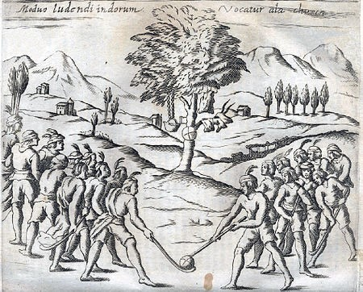

Hockey

Other games derived from hockey or its predecessors include the following:
- Air hockey is played indoors with a puck on an air-cushion table
- Beach hockey, a variation of street hockey, is a common sight on Southern California beaches.
- Ball hockey is played in a gym using sticks and a ball, often a tennis ball with the felt removed.
- Box hockey is a schoolyard game played by two people. The object of the game is to move a hockey puck from the center of the box out through a hole placed at the end of the box (known as the goal). The players kneel facing one another on either side of the box, and each attempts to move the puck to the hole on their left.
- Broomball is played on an ice hockey rink, but with a ball instead of a puck and a "broom" (actually a stick with a small plastic implement on the end) in place of the ice hockey stick. Instead of skates, special shoes are used that have very soft rubbery soles to maximize grip while running around.
- Deck hockey is traditionally played by the Royal Navy on ships' decks, using short wooden L-shaped sticks.
- Floor hockey is a form of hockey played on foot, on a flat, smooth floor surface, usually indoors in gymnasiums or similar spaces.
- Floorball is a form of hockey played in a gymnasium or in a sports hall. A whiffle ball is used instead of a plastic ball, and the sticks are only one meter long and made from composite materials.
- Foot hockey or sock hockey is played using a bald tennis ball or rolled-up pair of socks and using only the feet. It is popular in elementary schools in the winter.
- Gym hockey is a form of ice hockey played in a gymnasium. It uses sticks with foam ends and a foam ball or a plastic puck.
- Hurling and Camogie are Irish games bearing some resemblance to � and notable differences from � hockey.
- Indoor field hockey is an indoor variation of field hockey.
- Mini hockey (or knee-hockey), also known as "mini-sticks" is a form of hockey played in the United States in the basements of houses. Players kneel and use a miniature plastic stick, usually about 15 inches (38 cm) long, to maneuver a small ball or a soft, fabric-covered mini puck into miniature goals. In England 'mini hockey' refers to a seven-a-side version of field hockey for younger players, played on an area equivalent to half a normal pitch.
- Nok Hockey is a table-top version of hockey played with no defense and a small block in front of the goal.
- Pond hockey is a simplified form of ice hockey played on naturally frozen ice.
- Power hockey is a form of hockey for persons requiring the use of an electric (power) wheelchair in daily life.
- Ringette is an ice hockey variant that was designed for female players; it uses a straight stick and a rubber ring in place of a puck. The rules differ from those of hockey and resemble a mix of lacrosse and basketball.
- Rink bandy and Rinkball are team sports of Scandinavian origin that are played like bandy but on an ice hockey rink and with fewer players on each team.
- Rossall hockey is a variation played at Rossall School on the sea shore in the winter months. Its rules are a mix of field hockey, rugby and the Eton wall game.
- Shinny is an informal version of ice hockey.
- Shinty is a Scottish game now played primarily in the Highlands
- Skater hockey is a variant of inline hockey, played with a ball.
- Spongee is a cross between ice hockey and broomball and is most popular in Manitoba, Canada. A stick and puck are used as in hockey (the puck is a softer version called a "sponge puck"), and the same soft-soled shoes are worn as in broomball. The rules are basically the same as for ice hockey, but one variation has an extra player on the ice called a "rover".
- Table hockey is played indoors on a table.
- Underwater hockey is played on the bottom of a swimming pool.
- Unicycle hockey is played on a hard surface using unicycles as the method of player movement. There is generally no dedicated goalkeeper.
Reference:
Wikipedia